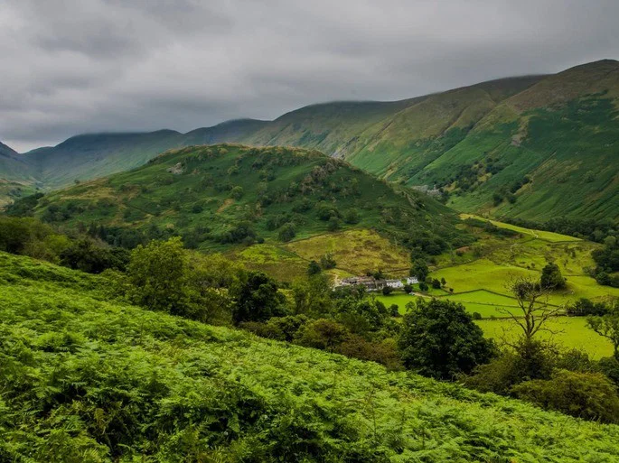

O relevo da Inglaterra é predominantemente suave e ondulado, dividido entre planícies no sul e áreas de colinas e montanhas no norte e oeste. O país é caracterizado por uma paisagem de campos verdes, vales fluviais e elevações modestas.
A Inglaterra possui um clima temperado oceânico, caracterizado por temperaturas amenas e chuvas bem distribuídas ao longo de todo o ano. As variações térmicas não são extremas, com médias anuais variando de 8,5ºC no norte a 11ºC no sul.
A vegetação da Inglaterra é dominada por florestas temperadas caducifólias (árvores que perdem folhas no inverno), hoje muito reduzidas e fragmentadas devido à urbanização e agricultura. A paisagem atual é composta majoritariamente por campos cultivados, pastagens e áreas de charnecas, com espécies nativas como carvalhos, faias e freixos.

A Inglaterra possui uma população de mais de (56) milhões de habitantes, concentrando aproximadamente (84%) dos residentes de todo o Reino Unido. O país é altamente urbanizado e densamente povoado, registrando uma das maiores taxas de crescimento demográfico recente do país, impulsionada principalmente pela imigração.
A Inglaterra está localizada na porção centro-sul da ilha da Grã-Bretanha, no noroeste da Europa. É a maior nação constituinte do Reino Unido, fazendo fronteira terrestre com a Escócia (norte) e com o País de Gales (oeste), e sendo banhada pelo Oceano Atlântico e Mares do Norte e da Irlanda.